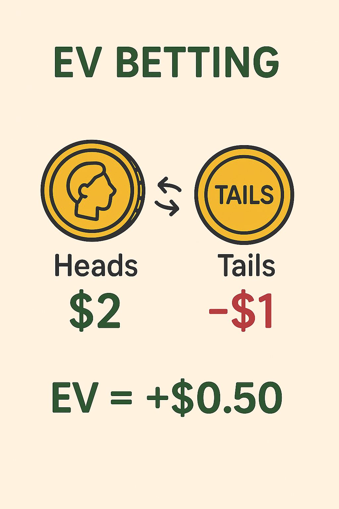
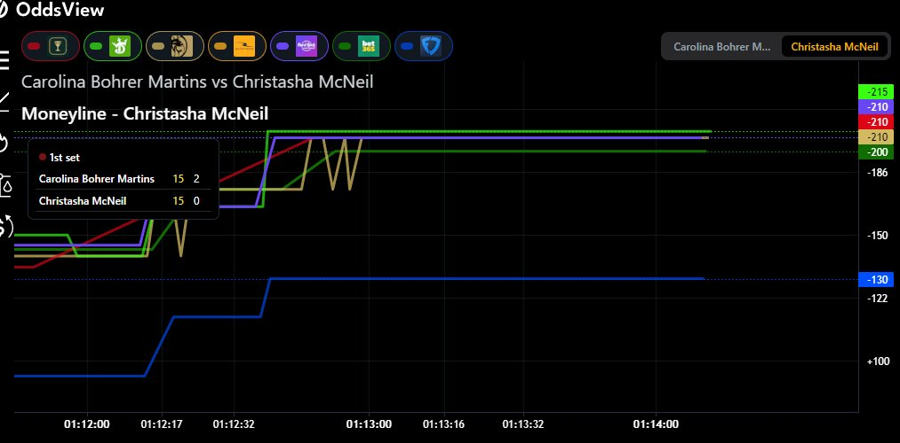

What is EV betting?
I am gonna use a coin to explain it. A coin has two sides, heads and tails. If I flip a coin it has a 50% chance of landing on either side. Let's say we bet and if it lands on heads you win $2. If it lands on tails you lose $1. With those bet odds you have a 50% chance to win $2>>on average thats $1 gained and a 50% chance to lose $1>>on average thats 50c lost. So, $1 - 50c = .50c in Expected Value each bet.
How do you find +EV bets?
You want to find bets where the bet odds don't match the true probabilities of said bet. A common way to do it is by comparing the book your betting on to a much sharper sportsbook. Another way is by comparing the bet to the markets average odds. As you can see from the picture 5 different sportsbooks are around -215 odds for Christasha McNeil to win the tennis match. Fanduel has the odds of -115 available. This would be considered a +EV bet.
